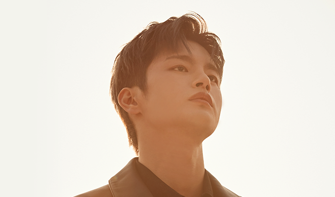
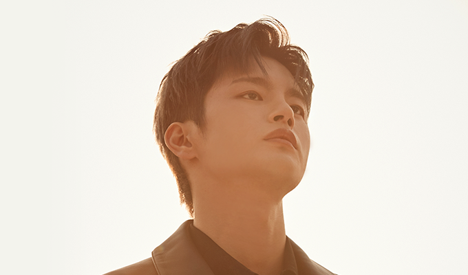

멸망 / 나이 미상 (서인국)
그는 빛과 어둠 사이에서 태어났다. 빛의 마지막 자리, 어둠의 첫 번째 자리. 그곳이 그의, '멸망'의 고향인 셈이다. 무언가를 멸망시키기 위해 그가 하는 일은 그저 존재하는 것뿐이다. 그것은 그의 의지도, 그의 사명도
그는 빛과 어둠 사이에서 태어났다. 빛의 마지막 자리, 어둠의 첫 번째 자리. 그곳이 그의, '멸망'의 고향인 셈이다. 무언가를 멸망시키기 위해 그가 하는 일은 그저 존재하는 것뿐이다. 그것은 그의 의지도, 그의 사명도
동경의 나이 열 살, 교통사고로 부모를 동시에 잃었다. 정신을 차렸을 땐 장례식장에 갓 일곱 살이 된 남동생 선경의 손을 잡고 앉아있었다. 아이라고 해서 다 모르지는 않아서 동경은 울지 않고 버텼다. 나는 울지 않는 착한 아이니까.
주익은 요즘 애들의 장래희망이다. 참고로 요즘 애들의 장래희망은 유투버, 연예인, 공무원, 건물주, 건물주의 자녀 등이 되시겠다. 그 중 제일 되기 힘든 것이 건물주의 자녀. 이유는 자신의 의지와 상관없는 직업(?)이기에 그렇다.